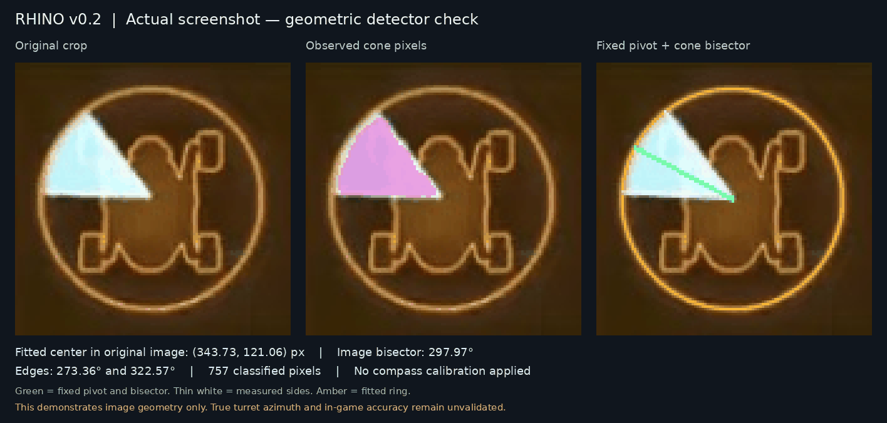

Experimental Windows x86-64 / Python 3.12 companion for measuring the Rhino turret HUD's field-of-view cone.
Install and check
Extract the full ZIP to a short new folder (e.g., %USERPROFILE%\RTC); the installer rejects deeply nested installation paths before downloading. Open the folder containing Setup_Beta.cmd.
Install Python 3.12 x86-64 from python.org. Check py -3.12 --version in a normal terminal.
Run Setup_Beta.cmd. It creates this folder's own environment and downloads hash-checked packages. Keep antivirus and checksum checks enabled.
Run Verify_Package.cmd, Run_Tests.cmd, then Run_UI_Check.cmd. Resolve failures before proceeding.
Run Run_Beta.cmd. Keep the console visible for errors.
Choose Open supplied sample. Inspect the fixed ring center, two cone boundaries and green bisector. The sample's image angle is about 298 degrees, not a known compass bearing.

First live calibration
Park the Rhino on approximately level ground. Stop and note its chassis heading. Use Borderless display mode for the first test.
Choose the monitor and Choose LIVE region. Select only the full rightmost circular indicator, with a small margin. Keep the tool's windows away from that crop.
Inspect the fit, then choose Lock ring — center is correct. Reselect rather than accepting a visibly wrong center.
Enter the chassis heading. Aim the turret along the nose and set FORWARD. Turn the turret about 90 degrees right and perform the RIGHT check.
Confirm the stationary/level/aligned conditions. Return forward and perform a slow full-circle sweep. The pivot should remain fixed and the line should bisect the cone.
Center a target marker. Use Freeze & COPY bearing now or the optional Ctrl+Alt+B hotkey. A failed copy leaves the clipboard unchanged; do not reuse an old number.
After chassis movement: invalidate the anchor and repeat calibration. A screen-only estimate cannot establish that the vehicle stayed motionless.
Diagnostics and development
Save diagnostic snapshot… explicitly saves a raw crop, preview and JSON under a new filename. Review the crop and local paths before sharing. Keep captures outside the source folder.